Registru de fermentație —
- Ora
- --:--
- Starea tejghelei
- —
Se face noaptea,
se coace dimineața.
Aluat dospit lent, patiserie laminată foaie cu foaie și cafea extrasă la comandă. Trei tejghele în Constanța, deschise zilnic de la nouă la șase.
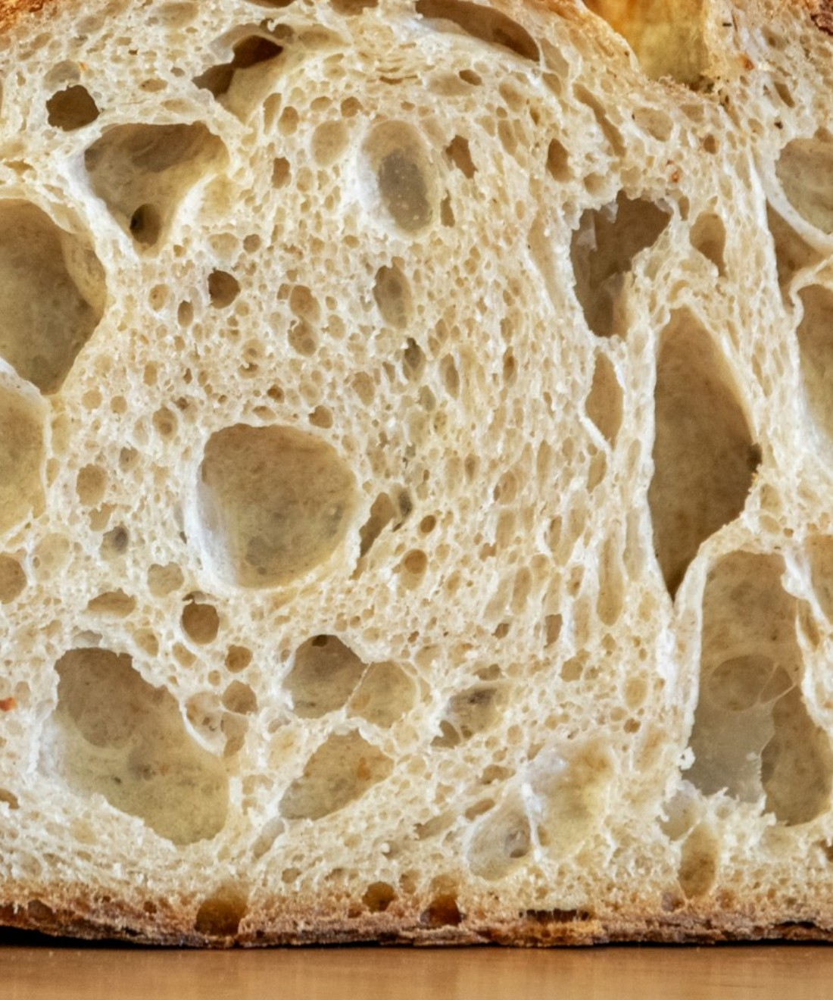
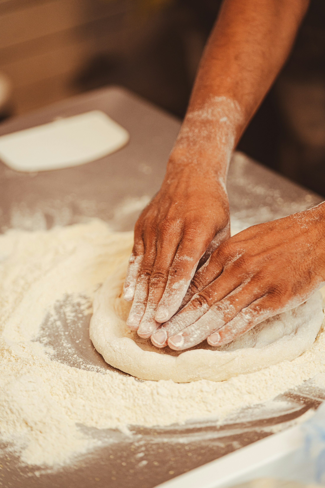
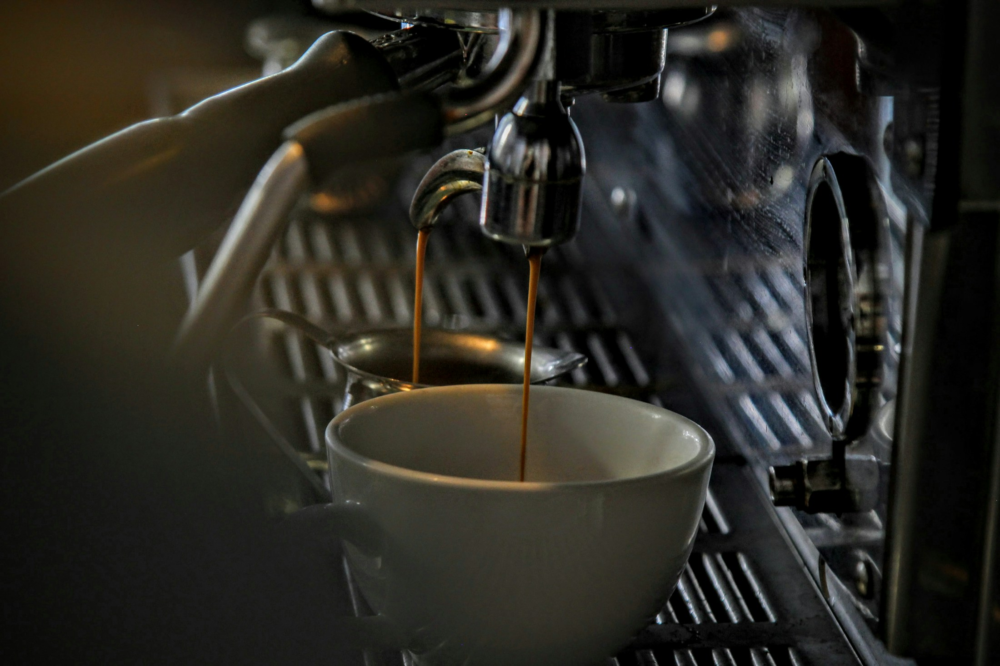
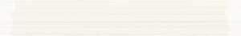
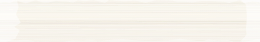
Ziua a doua, cea în care se coace
Aluatul a fost făcut ieri și a stat la rece peste noapte. Ce urmează e doar dimineața. Marcajul auriu stă pe ora la care citești pagina.
- 03Se aprinde cuptorul, ies pâinile de la rece
- 04Se laminează aluatul de croissant
- 05Croissantele se rulează bucată cu bucată
- 06Dospire finală, la cald
- 07Primul cuptor: pâinea
- 08Al doilea cuptor: croissantele
- 09Se deschid ușile
- 12Al treilea cuptor, dacă mai e aluat
- 18Se închide. Ce a rămas, rămâne în urmă
Curba de fermentație
Un ciclu întreg, de la maia la cuptor: treizeci și una de ore, întinse peste două zile. Derulează ca să-l parcurgi.
-
Maiaua se trezește
Ziua 1 · 08:00 · 24°C
Cultura hrănită cu douăsprezece ore înainte își dublează volumul. Miroase a iaurt și a mere, nu a oțet. Dacă miroase a oțet, am întârziat.
-
Autoliză și frământ
Ziua 1 · 12:00 · 26°C
Făina și apa stau împreună o oră înainte de sare. Glutenul se leagă singur, fără să-l forțăm; frământatul devine scurt.
-
Împăturiri la interval
Ziua 1 · 14:00 · 25°C
La fiecare treizeci de minute, patru împăturiri. Aluatul trece de la lichid la elastic fără să pierdem bulele făcute până atunci.
-
Dospire rece
Ziua 1 · 18:00 · 6°C
Modelat și mutat la frig, unde stă până dimineață. Aici lucrează timpul, nu noi: aciditatea urcă lent și gustul se adâncește peste noapte.
-
Cuptorul
Ziua 2 · 07:00 · 250°C
Abur în primele minute, apoi uscat. Crusta trece de la auriu la castaniu, iar pâinea cântă câteva minute după ce iese.
Aceeași disciplină, două extracții
Pâinea și cafeaua sunt aceeași problemă pusă de două ori: cât timp, la ce temperatură, cu câtă apă. Un croissant prost și un espresso prost se strică în același fel: grăbite.
De aceea cântărim doza, cronometrăm curgerea și aruncăm ce trece de fereastră. Nu e pedanterie; e singurul mod în care rezultatul de mâine seamănă cu cel de azi.
- Făină
- Grâude confirmat: moara, soiul și tipul de măciniș
- Boabe
- Prăjire pentru espressode confirmat: prăjitoria și originea
- Apă
- Filtrată și remineralizată
- Unt
- 82% grăsime, pentru laminare
Probe atașate
Spațiul, foaia, felia și extracția, fotografiate de aproape.
-
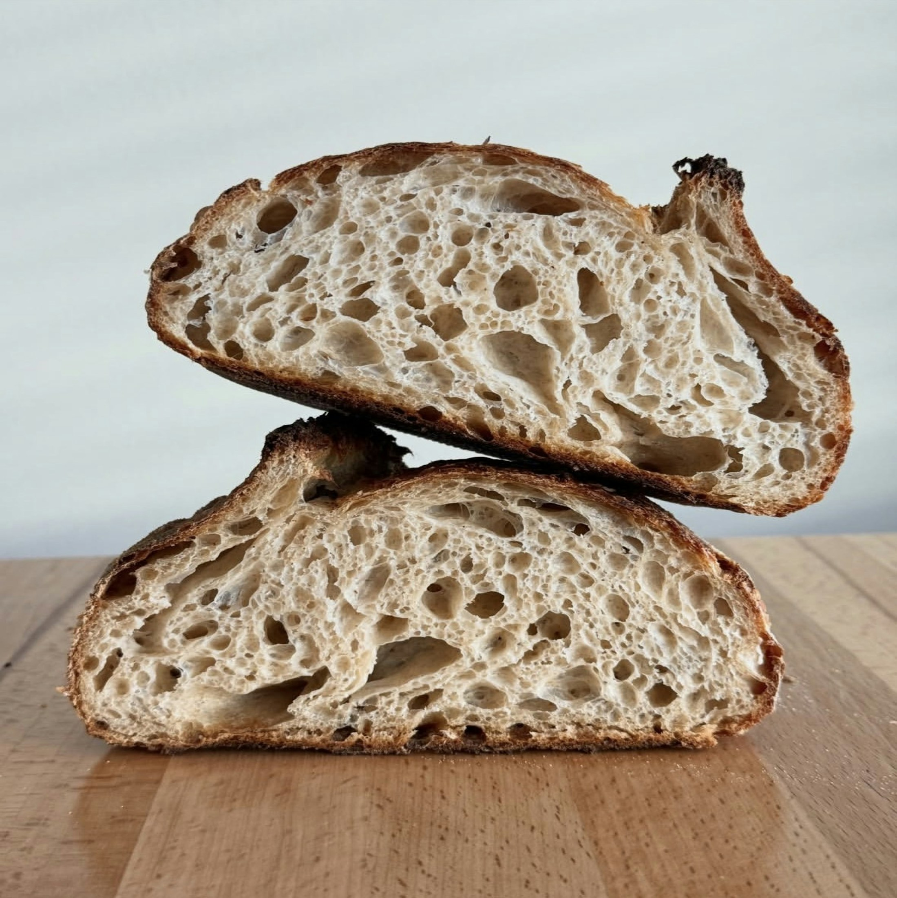
01 · Secțiune -
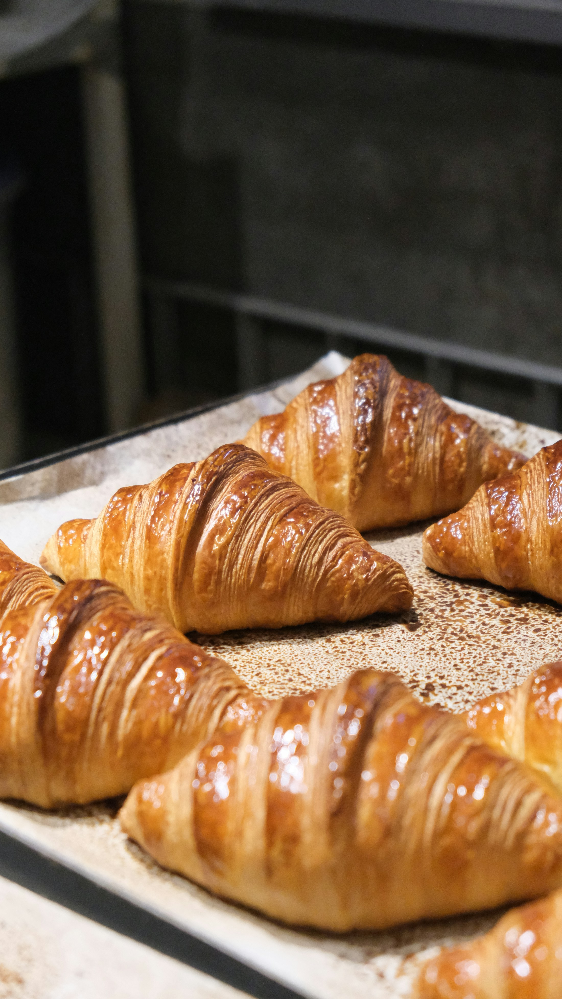
02 · Laminare -
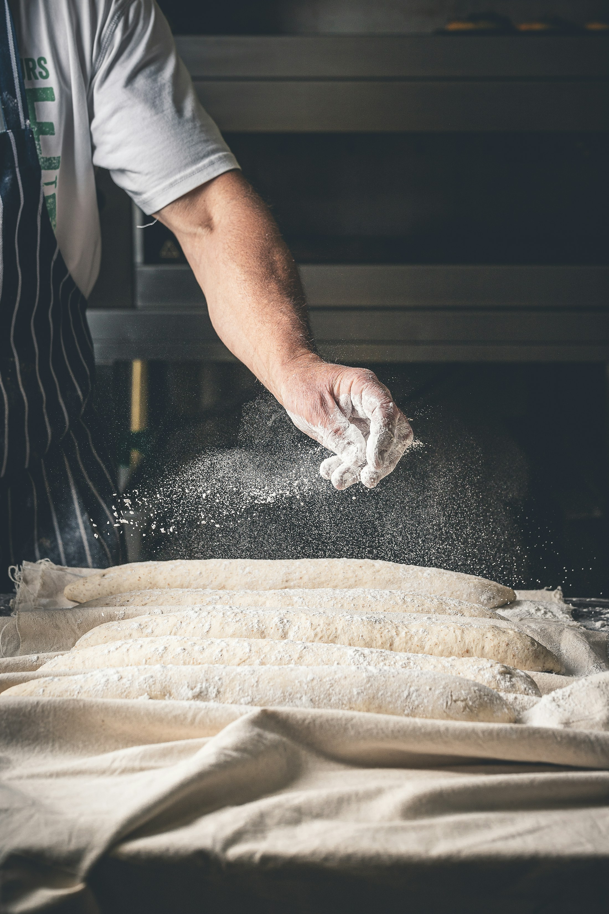
03 · Blat -
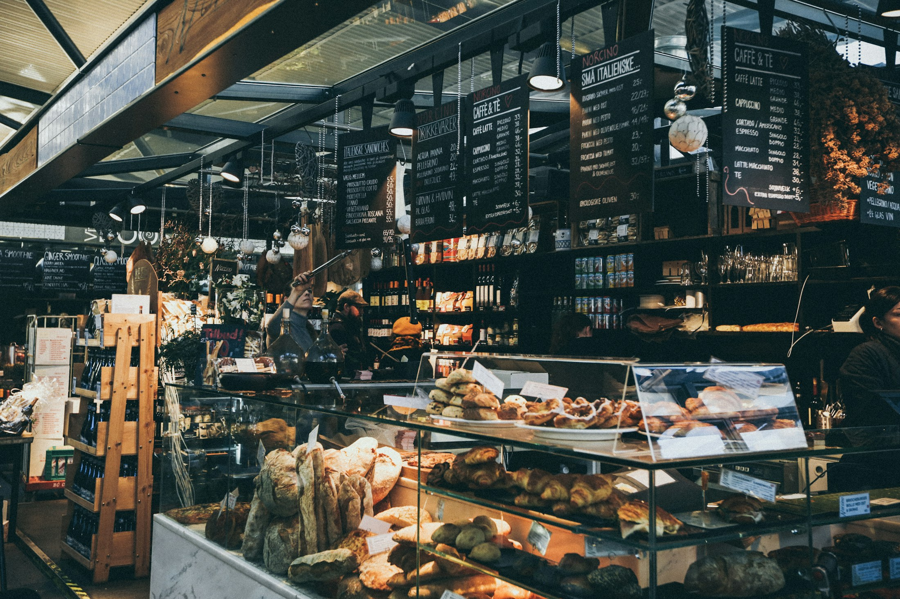
04 · Sală -
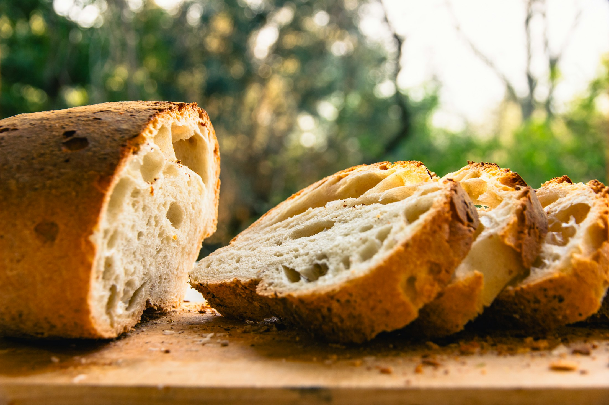
05 · Felie -
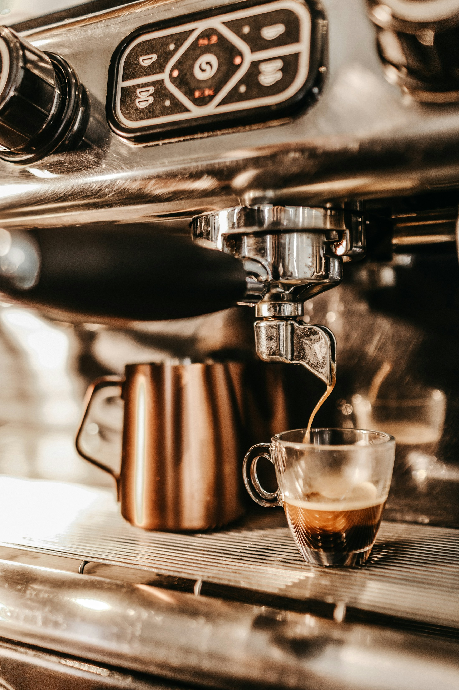
06 · Extracție
Registrul de opinii
Pagina rezervată pentru ce spun oamenii care au intrat pe ușă.
Rezervat. Nu inventăm recenzii, presă sau distincții
-
01
Recenzie de client
rând liber
-
02
Apariție în presă
rând liber
-
03
Distincție sau premiu
rând liber
Până când primim surse reale, rândurile rămân goale. Trimite-ne capturi, linkuri sau diplome și le trecem în registru exact cum sunt.
Trei tejghele în Constanța
Același aluat, aceeași cafea, același program: zilnic 09:00–18:00.
-
01
Mircea cel Bătrân
Bd. Mircea cel Bătrân 139
09:00 – 18:00, zilnic
0770 711 329 Deschide harta -
02
Centru Vechi
Str. Tomis 43
09:00 – 18:00, zilnic
0749 342 496 Deschide harta -
03
Boema
Str. Tomis 334
09:00 – 18:00, zilnic
0748 280 849 Deschide harta